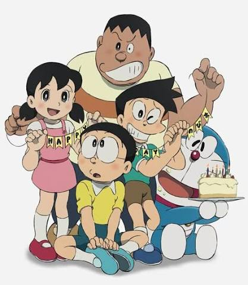

Welcome to Cartoon & Anime World

Doraemon
Doraemon is a robotic cat from the future who travels back in time to help a young boy named Nobita. With his amazing gadgets, Doraemon helps Nobita solve his problems and experience exciting adventures with his friends Shizuka, Gian, and Suneo.